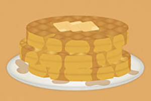

Designer, illustrator and crazy cat lady
-

Tatiana Marcussian is a designer and illustrator working outside of Boston, MA. She received a B.F.A in Graphic Design at Emmanuel College in Boston, MA. Most recently she managed the graphics department at Nimbit Inc. specializing in CD design. During that time as well as now she freelances and has created identities, illustrations, marketing collateral, posters and merchandise design.
When she isn't designing she is watching ridiculous amounts of tv, spending time with her cat and eating. Always eating.
Contact Me at: tatiana@tatdidthat.com